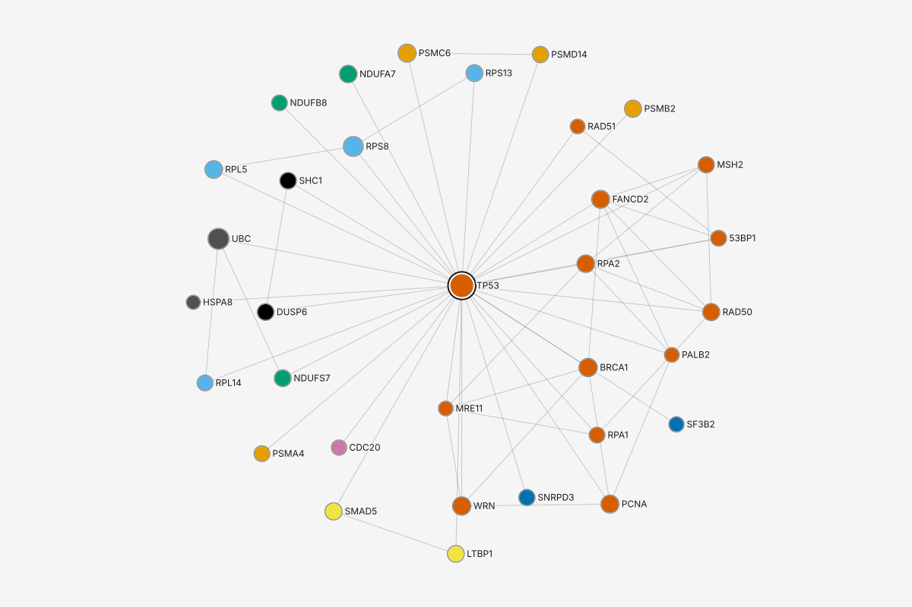
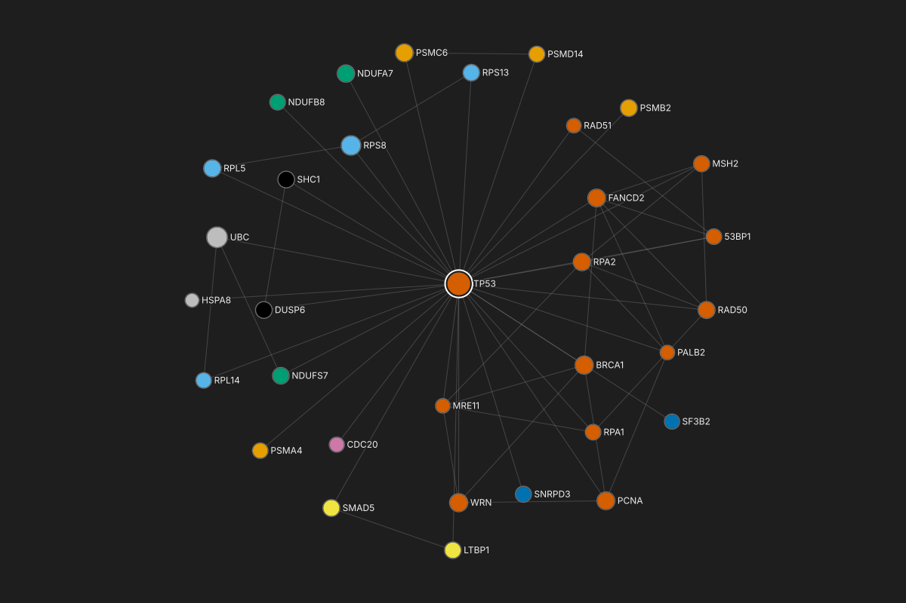
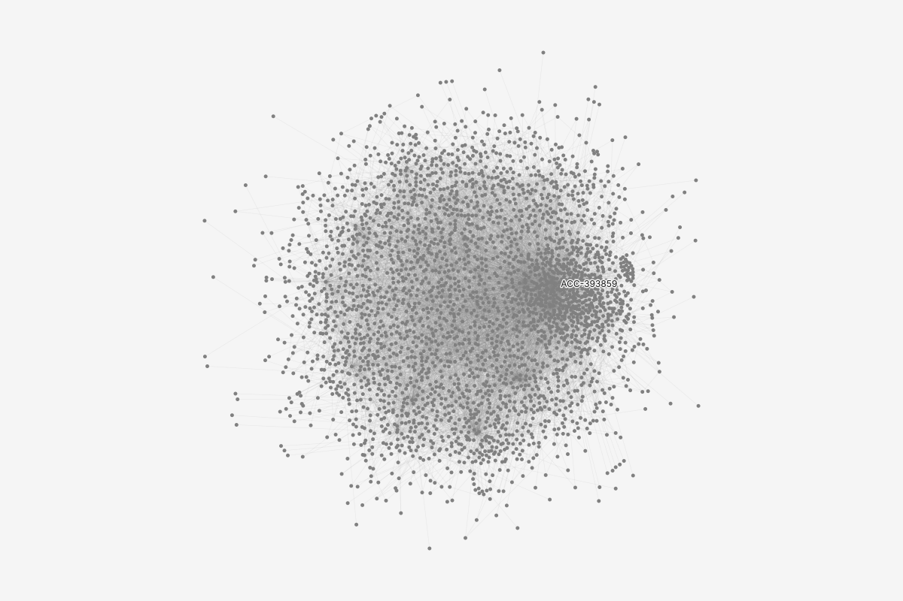
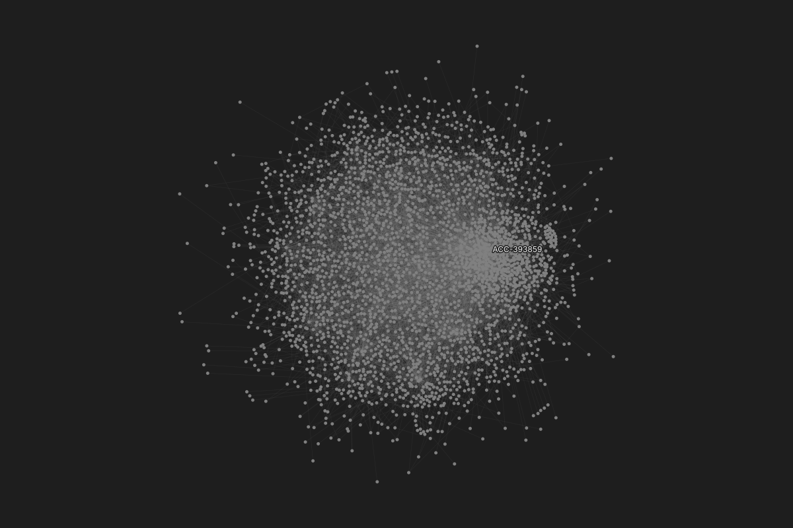

The right-hand column describes whatever is selected, and nothing else. With nothing selected it is the graph's: Overview and the Style stack. Runs have one home, Results on the rail; the inspector never lists them with nothing selected, because an empty list there read as "nothing has run". With a selection it describes that selection: Attributes hold only the file's own columns, each naming its file, and everything graphty computed -- degree, each run's value and rank, money totals -- sits in Results, so a computed value is never read as a column of the file; and Appearance is the same style stack with the layers that paint the selection marked. A result opened from a value is an inspector of its own. A node whose label is hidden gets Show label anyway, which adds it to one style layer; a set or a group gets Compare with the rest. The states, on real data: nothing selected; one protein, its Neighbors menu, what one press of Neighbors does, Path to..., and Show as style layer from a result; one edge; several proteins; two proteins with Paths between...; a mixed selection; a set; a found path and the same path kept; a community from a Louvain run and a table row chosen from it; the Betweenness result; a flagged account, with the alert's own columns and its money in and out; a selection of 7,495 transfers and accounts too large to ring one by one; and one account on the transfers, ACC-271813, pressing Path to... Below them, right-column crops show the opened Memberships, the degraded states, and Show label anyway before and after. Each state is the full app at 1440 by 900. Turn on the annotations to see which part of the framework each row follows and the compact-mantine component it would be built with; add #annotated to the address to open the page with them on.
1. Nothing selected: Overview and Style stack
The graph's own inspector, before anything is clicked. Overview reads the graph (300 proteins, 1,262 interactions, what the edges carry). Style stack is the whole ordered list of style layers, top wins, each with its legend, and the Look under it. Runs are not listed here: they have one home, Results on the rail, and a value is read on its node, in the inspector and the table. The left panel holds only the project's objects: graphs, sets and paths, views.
Module color module
Ribosome56
Proteasome40
Complex I35
Spliceosome32
DNA repair30
4 more
Quick actions
Rail: main menu, Graph, Data, Results, Notes, Assistant. Results is the one home for runs: every run of a measure, with its settings and date. Graph panel: graphs, sets and paths, views -- no Styles. Under the project name, the privacy line links to Data, Sent and saved. The header has no avatar and no Export button.
Nothing selected has two sections, Overview and Style stack. No Results section: runs have one home, the Results rail place, and an empty Results section here was read as "nothing has run" (study round 4). The first line names the graph; it has no verbs (interface-specification 4.2, Nothing).
Overview: the Overview row with Change overview..., the headline readings (MetricRow), then the Edges row and the weight in the words decided after round 6, "confidence: asked by each run" (a column's meaning as a weight is asked by each run, never set on the data), the Attributes row opening the table, and Layout with Run layout. ActionRow, MetricRow.
Style stack: every layer, top first, with a drag handle and the caption "top wins"; each layer's legend nests under it (Module color's five largest modules, then "5 more"). The Look row has a visible label. "+" adds a layer to the top. Tree (treegrid mode), Select.
2. One node: TP53, at rest
A biologist clicked TP53 and points at Neighbors. The first line names the protein and says what its buttons do in words: Neighbors, and under it Path to... The tooltip says what a press will do and its size before she presses: filter to TP53 and its neighbors, one hop, 33 nodes, undone by Ctrl+Z. Attributes are the file's own columns, module and log2FoldChange, each naming the file. Everything graphty computed is in Results: degree first, then TP53's value and rank in each run. Appearance is the same style stack, with the layers that paint TP53 marked with what each wins.
Module color module
Ribosome56
Proteasome40
Complex I35
Spliceosome32
DNA repair30
4 more
Quick actions
Filter to neighbors, 1 hop: 33 nodes. Ctrl+Z undoes it. Shift+N
Selection: the two-tone ring (canvas-drawing 6, ring 1). Nothing on the canvas uses the accent blue.
First line: name over the kind word; Neighbors, a labeled SplitButton whose main part always filters to neighbors (study round 2); Pin (ActionIcon); overflow. The main part's tooltip carries the result's size, the undo and Shift+N (interaction-pattern-entries 4.6). Path to... on a third line opens a pick mode for the end node.
Attributes with provenance on every row (proposed after round 3: "riskScore 62 -- scale of what? Who computed it?"): the second line names the file the column came from. Only the file's columns are Attributes. DataRow with a description line.
Results, per run: TP53's value and its rank among the 300 ("#2 of 300", content-design 5); the header names the scope, full graph. A row opens that result. Computed values moved here from Attributes, so a file's columns and graphty's runs are never mixed.
Connections: "32 neighbors", selecting them. Memberships: one row with its count (4.1a).
Appearance is the style stack itself, the rows that paint TP53 highlighted and marked with the property each wins: Module color its color, Size: degree its size, Base style its shape. Top wins. "+" adds a layer scoped to this selection. One stack in both states, so a canvas click never unmounts a drag (proposed after round 3).
3. The Neighbors menu: hops, sizes, and Select neighbors
She opens the caret. Every hop states its size before she commits: 33 proteins within one hop (TP53 and its 32 neighbors), 169 within two, 296 of 300 within three. Under them are the two commands at the checked hop count: Filter to neighbors, which is what the main part does, and Select neighbors, which only changes the selection.
Module color module
Ribosome56
Proteasome40
Complex I35
Spliceosome32
DNA repair30
4 more
Quick actions
Hops from TP53
✓1 hop33 nodes
2 hops169 nodes
3 hops296 nodes
Filter to neighbors33 nodes
Select neighbors33 nodes
Count before commit (interaction-pattern-entries 4.6; state-matrix 4.4): each hop row is checkable, keeps the menu open, and shows the size its choice gives, the seed included. The graph is undirected with one edge type, so the direction and edge-type rows are absent. Mantine Menu (dark) from the SplitButton's caret.
Filter to neighbors makes the neighborhood the investigation's boundary, one undoable filter step shown on the chip; it is the main part's action, so it is listed first. Select neighbors changes only the selection, and lives only here (study round 2).
4. After Neighbors: TP53 and its 32 neighbors, on the chip and undoable
She pressed Neighbors. The graph is now one filter step, TP53 and neighbors: 33 proteins and 59 interactions, every one labeled. The chip says so, the notice offers Undo, and TP53 stays selected. Degree now counts inside the filter; the three results ran on the full graph, so each says so and offers Re-run.


Module color module
DNA repair13
Proteasome4
Ribosome4
Complex I3
5 more
Filter to neighbors, 1 hop: 33 nodesUndo
Quick actions
The chip names the step's result and is a button with a caret (study round 2), opening the steps list. Undo in the notice, Ctrl+Z or the step's checkbox takes it back. Built with: Chip (compact-mantine Button, subtle) and Notification.
The same first line: Neighbors again would add the next hop to the step, never a second step.
Degree names its scope: "#1 of 33", counted inside the filter. Results ran on the full graph: each carries the freshness mark and Re-run (content design after round 3: every number names its scope).
5. Path to...: pick the end node
From TP53 she presses Path to... The Path tool arms with From filled in, in the same bar the Path tool always uses, and the canvas says what to do next in words: click the end node, or find it by name. Esc cancels, and focus returns to Path to...
Module color module
Ribosome56
Proteasome40
Complex I35
Spliceosome32
DNA repair30
4 more
FromTP53ToPick the end nodeRun
ScopeFull graphWeightChoose...
Quick actions
Pick the end node: click, or find it by name (Ctrl+K). Esc cancels.
Pick mode (study round 2): the Path tool's bar as sets-and-paths draws it -- From, To and Run, then Scope and Weight -- with To waiting and Run disabled, and one line of instruction at the top of the canvas. A pick runs the search; the found path is the Found path state. SecondaryToolbar; a Tooltip-styled status line (role status, polite).
Path to... is drawn pressed while the pick is armed. It is also in Quick actions (Ctrl+K) with the selected node as From.
6. Show as style layer, from a Results row
She wants to see where the other brokers are. Hovering TP53's Betweenness row shows its palette button; the same command leads the row's menu, which a click or Shift+F10 opens. Show as style layer adds a Betweenness layer to the top of the style stack, colors every protein by betweenness, and opens the layer's editor.
Module color module
Ribosome56
Proteasome40
Complex I35
Spliceosome32
DNA repair30
4 more
Quick actions
Betweenness
Show as style layerAdds a layer on top of the stack that colors every protein by betweenness. Its editor opens.
Open the result
Show in table, sorted
Copy value
Show as style layer (study round 1's Style by this, now on a Results row): the hovered row shows a palette ActionIcon as its trailing action; the row's Menu leads with the same command and says what it will do. It creates a style layer through the StyleManager, never paints the element directly. The same command is on the result's own inspector. An attribute row keeps Style by this.
Accessible name of the hovered row: "Betweenness, 0.1139, rank 2 of 300", a button that opens a menu.
7. One edge: TP53 -- BRCA1
She clicks the line between TP53 and BRCA1. Line 1 names both ends, each a link that selects that protein; the edge's one attribute is its confidence score, from the file and not used by any run yet.
Module color module
Ribosome56
Proteasome40
Complex I35
Spliceosome32
DNA repair30
4 more
Quick actions
The selected edge carries the two-tone casing (canvas-drawing 6, ring 1); its ends are not selected.
First line of an edge: "A -- B" on an undirected graph, each end a link; Neighbors, Filter to, Create set (interface-specification 4.2).
Endpoints: the property row (4.1). Attributes: confidence, with where it came from and the weight's state in the same words as everywhere else (content design after round 3).
Appearance: the whole stack; only Base style paints edges, so it alone is highlighted, winning color and width. Module color and Size: degree paint nodes and stay unmarked.
8. Several nodes: TP53, BRCA1 and WRN
She shift-clicks BRCA1 and WRN. All three are DNA repair proteins, so module is a shared value; the attributes whose values differ are one row that opens the table on these three. Results gives each run's range over the three.
Module color module
Ribosome56
Proteasome40
Complex I35
Spliceosome32
DNA repair30
4 more
Quick actions
First line: "3 selected", kind word Nodes; Neighbors, Filter to, Create set (4.2).
Statistics of the selection (selection.statistics()): its size. The degree range is graphty's count, so it sits in Results. Attributes: shared values with their source, then one "N differ" row opening the table.
Results of a selection: per run, the one value all share or the range across them (proposed after round 3). Blocked on scoped reads in graphty-element.
Appearance: the stack, Module color winning one color (all three are DNA repair), Size: degree a range.
9. Two nodes: TP53 and SMAD3, Paths between...
She wants to know how TP53 reaches SMAD3. With exactly two nodes selected, the first line gains a labeled button, Paths between... It arms the Path tool with From and To already filled in, TP53 and SMAD3, in the order she selected them. The bar is the Path tool's own: Scope is the full graph, and Weight waits for her to say what a higher confidence means, or to count hops; Run stays off until she chooses. Run then finds every shortest path.
Module color module
Ribosome56
Proteasome40
Complex I35
Spliceosome32
DNA repair30
4 more
FromTP53ToSMAD3Run
ScopeFull graphWeightChoose...
Quick actions
The Path tool's bar (interface-templates 14; sets-and-paths): From and To filled from the selection in selection order; Scope, the one control for where the search runs; Weight opens empty, "Choose...", and Run stays off until a choice is made; choosing confidence asks what a higher confidence means, on this run (load step after round 3). SecondaryToolbar, SearchInput, StyleSelect.
Paths between... (study round 1): a secondary Button on a third line, shown only when the selection is exactly two nodes. It arms the Path tool; it no longer opens a form beside the inspector, so there is one way a path search looks, the one in sets-and-paths.
Statistics: the two are not adjacent, so edges between reads 0. Attributes: nothing is shared, so one "N differ" row. Results: per run, a range, or two communities.
10. A mixed selection: two nodes and the edge between them
She shift-clicks BRCA1 and the edge joining it to TP53. The first line counts the selection and offers only what makes sense for nodes and edges together.
Module color module
Ribosome56
Proteasome40
Complex I35
Spliceosome32
DNA repair30
4 more
Quick actions
The selected edge carries the casing; both proteins the selection ring (canvas-drawing 6).
First line: "3 selected", kind word Nodes and edges; only Filter to and Create set (interface-specification 4.2).
Statistics reads selection.statistics(); its attribute readings cover nodes only, so each names its kind and its source.
Attributes: one ActionRow per kind, each opening the table on that kind. Results: node results only, a range over the two proteins.
Appearance: the stack; Base style also paints the edge, so its mark says "shape, edge".
11. A set: DNA repair
She selects the DNA repair row in the left panel. The set's first line leads with Select members; its layout, rule and origin follow, then its readings, its members by degree, its results as one row into the table, and the style stack with the layers that paint its members marked. Compare with the rest, on its own line, opens the comparison of DNA repair against the other proteins, leading with size, edges inside and out, and density.
Module color module
Ribosome56
Proteasome40
Complex I35
Spliceosome32
DNA repair30
4 more
Quick actions
No layer draws a hull for this set, so each member carries the thin member ring (canvas-drawing 6, precedence).
First line of a rule set: name; size and kind; Select members first, Filter to, Freeze (4.2; the verb is Freeze and a frozen copy is a "frozen set", content design after round 3), drawn with a snowflake. Compare with the rest, a labeled Button on its own line: 14 of 16 opened the group's own panel first to compare it with the rest (study round 5 tree test); it opens screens/comparison.html.
Property rows: Layout with Run layout, Rule, Created from. ActionRow.
Statistics of the set: readings, never fields. MetricRow. Blocked on scoped reads.
Members, by degree, each with a RankChip; "27 more members" opens the table. Results of a set: one row, a value per member in the table.
Appearance of a kept set: the stack with the layers that paint its members marked; "+" adds a layer scoped to DNA repair, which replaces the own-row-per-channel form (proposed after round 3). Used by: one ActionRow.
12. A found path: TP53 to SMAD3
She switched the color layer to log2FoldChange, then ran the Path tool: a shortest path of 3 hops from TP53 to SMAD3, one of 12 as short. The inspector says how it was found, as sets-and-paths does: the query, its scope, the weight and what the weight did (hops were counted, not confidence), and the ties with a stepper through them. It is offered, not kept: Keep path keeps it.
log2FoldChange color log2FoldChange
−2.523.15
Quick actions
The offered path: two-tone casing on its edges with chevrons for the direction of travel, the member ring on its nodes, a start badge on TP53 and an end badge on SMAD3 (canvas-drawing 6).
First line of a found path, as sets-and-paths draws it: "Found path (unweighted)", its hops; the keep verb leads, labeled Keep path (content design after round 3 replaces "Create path to style"), focused when the run hands back, then Select members and Filter to.
Created from, as DataRows: Query, Scope, Weight in the weight's words, one line on what the weight did, and Ties, "Route 1 of 12", with the sibling stepper moved here from the first line. Dashed in sets-and-paths: the tie count waits on graphty-element.
Endpoints: start and end badges, the same marks the canvas draws. Members in walk order, node rows with an inset edge row between; edge confidence in tertiary ink because it did not choose the route.
Appearance: until kept, its own control is Keep path; then the stack with what paints the path marked. Used by is absent until graphty-element can say what reads an offered path.
13. The same path, kept
She pressed Keep path. The path is now a row in Sets and paths, named from its ends, and its inspector is a kept object's: Select members leads, Layout joins the property rows, and Appearance offers a layer scoped to the path.
log2FoldChange color log2FoldChange
−2.523.15
Quick actions
First line of a kept path: its name; derived kind and hops (4.2, Path); Select members, Filter to, Create set.
Property rows: Created from, naming how it was found, then Layout with Run layout (blocked on layout scope). Endpoints and Members as on the found path.
Appearance of a kept path: the stack, and "+" adding a layer scoped to TP53 to SMAD3. Used by: one ActionRow.
14. A group: Community 4, from the Louvain run
She clicks Community 4 in the legend. The run's group is selected as a whole: its 36 proteins carry the member ring, and the inspector shows what the run says about it -- 104 interactions inside and 44 out, and its members by degree, starting with the hub UBB. Copy ids takes all 36 names; Keep as set keeps the group past the next run. Compare with the rest sits on the group's own panel, where people looked first for it.
Louvain color community
Community 162
Community 243
Community 336
Community 436
6 more
Quick actions
The legend entry's label is the group's handle: clicking it selects the group; its swatch, a separate control, opens the color picker (as on the colour-by-value page). No hull is drawn, so each member carries the thin member ring (canvas-drawing 6).
First line of an offered group: its name with the sibling stepper beside it, the kind word Community; the keep verb, Keep as set, leads (the same word as Keep path; proposed), then Select members and Filter to. Compare with the rest on its own line, as on a set.
Created from names the run and how it read the weight. Results are the run's, from its Communities table: size, edges inside and out, and the fold-change mean beside the rest of the graph. A group has no file columns of its own, so it has no Attributes section.
Members, by a measure the reader chooses (study round 2); Copy ids in the header copies all 36.
Appearance of an offered group: the one control Keep as set, then the stack with Louvain color marked.
15. The same group in the table, after a row is selected
She opened the 33 more members: the table lists Community 4's 36 rows, sorted by degree. She clicks PRPF8. PRPF8 is now the selection -- ring, inspector and row agree -- and the table keeps the group's rows. Its Louvain community is a result, so it is in Results, not Attributes. Clicking Community 4 in the legend again goes back to the whole group.
The table keeps the group (study round 2): a table opened on a group or set is scoped to it, "Community 4: 36 nodes, 1 selected". DataTable row selection.
One node, the same inspector as TP53's, with Neighbors and Path to...
Attributes from the file only; Results leads with degree, graphty's count, then the run whose color layer paints the node, Louvain, then the other runs with ranks over all 300.
16. A result as its own inspector: Betweenness
She clicks Betweenness in TP53's Results section (the Results rail place opens the same inspector). The inspector becomes the result's: a state line saying it is finished and current, how it ran (scope, and what it did with the weight), the distribution of its 300 values, the highest proteins, and its runs. Compare with another run... and Show as style layer are labeled buttons. Esc, or a click on empty canvas, returns to TP53, which stayed selected on the canvas.
Module color module
Ribosome56
Proteasome40
Complex I35
Spliceosome32
DNA repair30
4 more
Quick actions
The canvas keeps TP53 selected: a result is read here, not selected on the canvas. Esc returns the inspector to TP53.
A result is its own inspector kind (proposed after round 3): first line, the method's name over the kind word Result; Re-run and Show in table as ActionIcons; Compare with another run... and Show as style layer as labeled secondary Buttons on a third line.
State line: finished, running, failed or out of date, with its reason (state-matrix, Result). One line under the type row, role status.
Run: Scope and the weight in its three-state words, with one line on what the weight did (content design after round 3). Weight opens the meaning question.
Values: the distribution on the scale the automatic layer uses (log, heavy tail), median and the count at zero. Highest: the top three with ranks, each selecting its protein; the rest in the table. Runs: every run of this method, one here.
17. A flagged account: ACC-365386, and why it was alerted
A fraud investigator opens the account the alert named. Its attributes say where each value came from: the alert's rule and time are the bank's own columns in accounts-2026-03.csv, and riskScore is the bank's score, not graphty's. On a directed, weighted graph, Connections splits neighbors and transfers in and out, and Results totals the amount each way, beside the runs, because graphty computed it: $19,449.22 in over 3 transfers, $28,587.48 out over 5.
Flagged flagged
true14
false, shown as density2,986
Quick actions
Drawn: the density drawing with the 14 flagged accounts over it in the Flagged layer's color; ACC-365386 with the selection ring and its label.
Attributes, expanded past the cap of 4 because the reader opened "N more" for accounts this session (4.1a). flagged first (the Flagged layer reads it), then the alert's own columns, then riskScore.
Provenance on every row: alertRule and alertTime "from accounts-2026-03.csv" -- the bank's alert, carried as columns of the file, not a graphty feature; riskScore "not computed by graphty: the bank's own score, 0 to 100" (round 3: "scale of what? Who computed it?"). A long text value wraps on its own line.
Results: Louvain community, PageRank with its rank among 3,000, then Money in and Money out, graphty's sums, so they sit with the other computed values.
Connections on a directed graph: Neighbors and Transfers split In, Out and All. Money in and Money out (the money words used in the table and the catalog) -- weighted in-strength and out-strength over the amount column, proposed to graphty-element (framework-changes, graphty-element proposals), drawn as a proposal. CompoundRow.
Appearance: the transfers' stack; the Flagged layer wins this account's color.
18. Past the selection cap: one outline and a count
A fraud investigator selects two hops out from the busiest merchant, ACC-393859, then the transfers among those accounts: 1,863 accounts and 5,632 transfers, 7,495 elements, past the selection cap of 5,000. Every account and transfer is still drawn; the selection is one outline with its count instead of 7,495 rings. Every id is held, and the table lists the selected rows. The same state from Select all is in the selection-over-cap mock.


7,495 selected
Quick actions
NodesEdges
Selected: 1,863 nodes. Sorted by degree.Rows 1 to 7 of 1,863
id (account)
kind
country
total degree
riskScore
flagged
ACC-393859
merchant
US
907
0
false
ACC-697114
merchant
US
522
62
false
ACC-527694
merchant
US
344
43
false
ACC-293071
merchant
GB
249
50
false
ACC-694666
merchant
DE
233
34
false
ACC-593226
merchant
FR
200
0
false
ACC-620800
merchant
NL
144
32
false
ACC-317086
merchant
IN
132
0
false
ACC-810605
merchant
BR
123
20
false
ACC-620684
merchant
MX
114
46
false
ACC-173558
merchant
US
107
0
false
ACC-826294
merchant
NG
107
31
false
Over the selection cap (5,000 elements in graphty-element today): every node and edge is drawn as usual; the selection is one outline in the selection band with a count badge, nothing truncated (canvas-drawing 6; interaction-pattern-entries 4.1). Element need: a selection over the cap holds every id.
The table lists the selected rows, virtualized; the scope line and the scroll thumb show that 7 rows of 1,863 are in view (scale-levels, Selection mark). DataTable.
The same inspector as any several-element selection: the count, the kind word, Filter to and Create set.
Statistics: the counts, then one CompoundRow for the node attribute kind. Results: one row, a value per selected account in the table.
Memberships: 13 of the mule ring's 14 accounts are in this neighborhood. Appearance: the Flagged layer is turned off in this view, so Base style paints everything.
19. One account on the transfers: ACC-271813, Path to...
An analyst asked how ACC-271813 is connected to ACC-233575 selects the first account. Its inspector has the same lines as a protein's: Neighbors, and under it Path to... in words. She presses it: the Path tool arms with From filled in, and the canvas says what to do next -- click the end node, or find it by name. Weight waits for her to say what a higher amount means; Run stays off until To is picked. Esc cancels, and focus returns to Path to... Attributes are the accounts file's own columns; degree, which graphty counted, is in Results.
Flagged flagged
true14
false, shown as density2,986
FromACC-271813ToPick the end nodeRun
ScopeFull graphWeightChoose...
Quick actions
Pick the end node: click, or find it by name (Ctrl+K). Esc cancels.
Pick mode on the transfers, as on the proteins (state 5): the Path tool's bar with From filled, To waiting, Run off, and one line of instruction at the top of the canvas. Weight opens the same empty choice every run asks for (sets-and-paths): on transfers, what a higher amount means. SecondaryToolbar; a Tooltip-styled status line (role status, polite).
Path to... is on every one-node inspector, whatever the data: the account's first lines are the protein's, Neighbors then Path to... in words. Drawn pressed while the pick is armed; also in Quick actions (Ctrl+K) with the selected node as From.
Attributes: only the accounts file's columns. Results: degree, graphty's count. No run has been asked for on this account's data here, so Results holds only the count.
Connections and Memberships read as on ACC-365386 (state 17) and are left out of this frame.
20. Degraded states, the opened Memberships, and Show label anyway, right column only
The rest of the frame does not change in these states, so each is the inspector column alone, at its real 240 px width.
Memberships openedThe node's one Memberships row, opened in place: the two sets that hold TP53.LoadingJust after the file opened: the counts the element is still computing read "not yet measured"; results still running are skeleton rows.Error, inside the failing sectionThe set's Statistics could not be read; the section says why and offers its one verb. The rest of the inspector is unaffected.Not currentA filter step was added after Betweenness ran, so its row in Results says, in body ink, the scope it ran on and offers Re-run.Show label anywayWRN's label is hidden because the labels around it are drawn first. Appearance says so in words and offers Show label anyway, which adds WRN to one style layer rather than changing WRN itself. Connections and Memberships read as on any node and are left out of this crop; Results shows only degree, which the Size: degree layer reads.After Show label anyway: one layer holds every forced labelWRN's Appearance now leads with the layer Labels shown anyway (this file), winning its label. With nothing selected, the Style stack lists that layer like any other: drag it to reorder, open it to see each node it labels, and remove one label with its x or the whole layer at once. It belongs to this file only.Nothing selected, after a filter stepThe graph's inspector once the filter TP53 and neighbors is on: the Overview names its scope. It lists no runs: the three results the step left out of date are counted on the Results rail button and listed there, with Re-run all, and each value on a node carries the mark (the crop before).Partial: selected, but filtered outFound with Find while the step "TP53 and neighbors" is on. SMAD3 is three hops out, so it is not drawn and not counted.Directed and weighted, pinned, a result not computedThe busiest merchant in the transfer graph, pinned in place. Connections split In, Out and All; Results totals the amount column as Money in and Money out (proposed to graphty-element), after total degree; Betweenness has not been asked for.